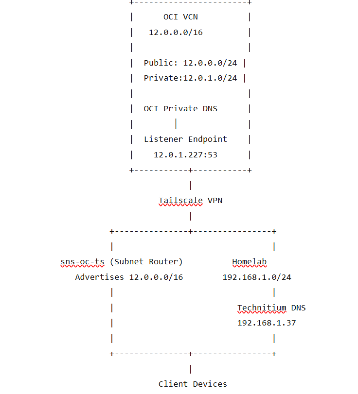
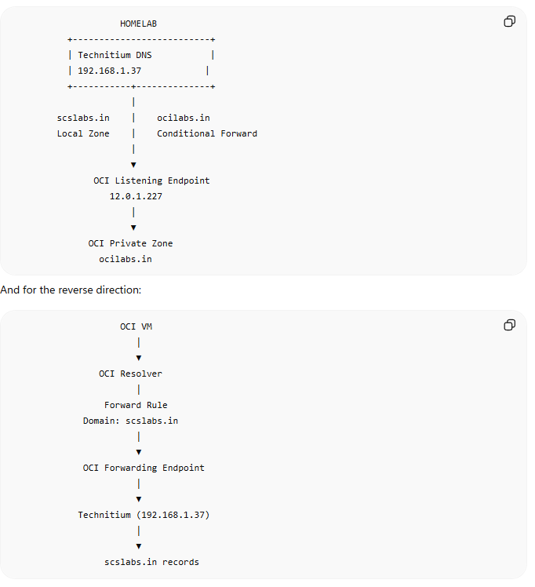

Hybrid DNS Between OCI Private DNS and Homelab Technitium DNS Using Tailscale
- LAB
- ORACLE CLOUD
- Network
Overview
This guide explains how to integrate Oracle Cloud Infrastructure (OCI) Private DNS with a homelab running Technitium DNS over a Tailscale network. The objective is to have:
*.scslabs.inresolved locally by Technitium*.ocilabs.inresolved by OCI Private DNS- No duplicate DNS records
- OCI as the authoritative source for OCI resources
- Technitium as the central DNS server for the homelab
| Requirement | OCI Endpoint Type | Purpose |
|---|---|---|
Homelab → OCI DNS (ocilabs.in) |
✅ Listening Endpoint | Accepts DNS queries from external clients (Technitium, homelab, VPN) |
OCI → Homelab DNS (scslabs.in) |
✅ Forwarding Endpoint | Allows OCI Resolver to forward queries to your Technitium DNS |
Home Lab to OCI DNS
Network Topology

Environment
Homelab
- Network:
192.168.1.0/24 - Domain:
scslabs.in - Technitium DNS
- Tailscale subnet router
OCI
- VCN:
12.0.0.0/16 - Public subnet:
12.0.0.0/24 - Private subnet:
12.0.1.0/24 - Domain:
ocilabs.in - OCI Private DNS
Step 1: Create OCI Private DNS Zone
Navigate to:
Networking
→ DNS Management
→ Private Zones
→ Create ZoneCreate:
Zone Name:
ocilabs.inExample records:
lnxjmpsr A 12.0.0.5
ocitss01 A 12.0.1.5Step 2: Associate the Zone
Associate the Private Zone with the VCN using a Private View.
Private View
↓
Associate with
LAB-VCNStep 3: Create a DNS Listening Endpoint
Navigate:
Networking
→ DNS Management
→ Private Resolver
→ Endpoints
→ Create EndpointChoose:
Listening EndpointExample:
Name:
homelab
Subnet:
Private Subnet
Assigned IP:
12.0.1.227This endpoint becomes the DNS server for ocilabs.in.
Step 4: Configure OCI Security
Allow DNS access.
Ingress:
| Source | Protocol | Port |
|---|---|---|
192.168.1.0/24 | UDP | 53 |
192.168.1.0/24 | TCP | 53 |
Optional, to route using Tailscale DNS:
| Source | Protocol | Port |
|---|---|---|
100.64.0.0/10 | UDP | 53 |
100.64.0.0/10 | TCP | 53 |
Step 5: Verify Connectivity
From homelab:
Test-NetConnection 12.0.1.227 -Port 53Expected:
TcpTestSucceeded : TrueTest DNS:
nslookup lnxjmpsr.ocilabs.in 12.0.1.227Expected:
Name: lnxjmpsr.ocilabs.in
Address: 12.0.0.5Step 6: Configure Technitium
Go to:
Zones
→ Add ZoneSelect:
Conditional Forwarder ZoneConfigure:
Zone:
ocilabs.inForwarder:
12.0.1.227Protocol:
DNS over UDPDisable:
DNSSEC ValidationResult:
ocilabs.in
↓
12.0.1.227Step 7: Configure Technitium as Primary DNS
Point clients to Technitium.
Example:
Windows DNS
127.0.0.1or
192.168.1.37Verify:
nslookup lnxjmpsr.ocilabs.inResult:
12.0.0.5Final DNS Flow
Client
│
▼
Technitium
│
├── scslabs.in
│ │
│ ▼
│ Local Records
│
└── ocilabs.in
│
▼
OCI DNS Listener
│
▼
OCI Private ZoneTailscale Subnet Router Configuration
If not already configured:
OCI router:
tailscale up \
--advertise-routes=12.0.0.0/16Homelab router:
tailscale up \
--advertise-routes=192.168.1.0/24Approve routes in the Tailscale admin console.
Verify:
tailscale status --jsonExpected:
PrimaryRoutes:
12.0.0.0/16Common Troubleshooting
1. nslookup returns public IP instead of private IP
Symptom:
91.195.240.94Cause:
Client is using ISP DNS instead of Technitium.
Fix:
Set-DnsClientServerAddressPoint DNS to Technitium.
2. nslookup works with 127.0.0.1 but not normally
Example:
nslookup host 127.0.0.1works.
nslookup hostfails.
Cause:
Windows is using another DNS server.
Fix:
Configure Wi-Fi adapter DNS to Technitium.
3. nslookup 12.0.1.5 fails
*** Non-existent domainReason:
Reverse PTR records do not exist.
Solution:
Create reverse zones or PTR records if required.
4. ping 12.0.1.5 works but ping 12.0.1.227 fails
Cause:
OCI DNS Listener may reject packets sourced from non-VCN addresses when subnet routing is configured without SNAT.
If using:
--snat-subnet-routes=falsethe listener sees:
Source:
192.168.x.xinstead of
12.0.x.xEnable SNAT or use Technitium as the single DNS proxy.
5. Test-NetConnection succeeds but nslookup times out
Check:
- Security Lists
- NSGs
- UDP 53
- TCP 53
- Listener Endpoint configuration
6. Verify subnet routes
tailscale status --jsonShould contain:
PrimaryRoutes:
12.0.0.0/16Linux:
ip route show table 52Expected:
12.0.0.0/16 dev tailscale07. Verify DNS Listener
Test-NetConnection 12.0.1.227 -Port 53nslookup host 12.0.1.227Recommended Architecture
+--------------------+
| Technitium DNS |
| 192.168.1.37 |
+---------+----------+
|
+------------------+------------------+
| |
▼ ▼
Local Zone (scslabs.in) Conditional Forwarder
│
▼
OCI DNS Listener
12.0.1.227
│
▼
OCI Private Zone
ocilabs.inThis design provides:
- Single DNS server for all clients
- No duplicated records
- OCI remains authoritative for cloud resources
- Automatic propagation of new OCI records
- Simple troubleshooting
- Scalable hybrid DNS architecture
OCI → Homelab DNS
To resolve scslabs.in from OCI.
Step 1: Create a Forwarding Endpoint
Go to:
Networking
→ DNS Management
→ Private Resolver
→ Endpoints
→ Create EndpointSelect:
ForwardingFor example:
Name: homelab-forwarder
Subnet: 12.0.1.0/24
IP: 12.0.1.228The IP will be assigned from your subnet.
Step 2: Create a Resolver Rule
Go to:
Resolver
→ Rules
→ Create RuleConfigure:
Rule Type: Forward
Domain: scslabs.in
Destination: 192.168.1.37(Your Technitium DNS server)
Port:
53Associate the rule with the Forwarding Endpoint you created.
Final architecture

ocilabs.in to OCI, and the OCI resolver forwards scslabs.in back to Technitium.End-to-end result
| Query Origin | Query | Resolved By |
|---|---|---|
| Homelab | proxmox.scslabs.in | Technitium (local) |
| Homelab | lnxjmpsr.ocilabs.in | Technitium → OCI Listening Endpoint |
| OCI VM | lnxjmpsr.ocilabs.in | OCI Private DNS |
| OCI VM | proxmox.scslabs.in | OCI Resolver → Forwarding Endpoint → Technitium |
Recommended production design
For your environment:
- Technitium (
192.168.1.37) is authoritative forscslabs.in. - OCI Private DNS is authoritative for
ocilabs.in. - OCI Listening Endpoint (
12.0.1.227) is used by Technitium to resolveocilabs.in. - OCI Forwarding Endpoint + Resolver Rule forwards
scslabs.inqueries from OCI to Technitium.
This creates a clean bidirectional hybrid DNS setup with no duplicate records and each environment remaining the source of truth for its own domain.
← All posts